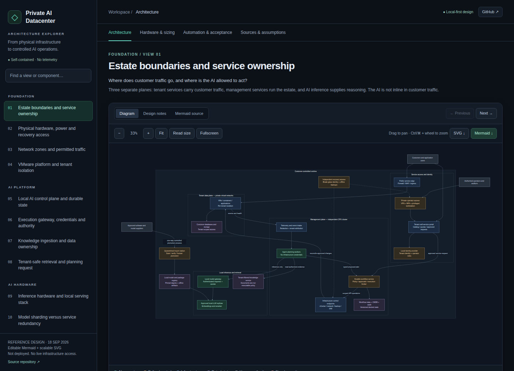

Private AI Datacenter
A reference design for running AI workflows on premises, in 18 linked views from hardware to tenant offboarding.
- When
- Sep 2026
- Status
- Reference design; not deployed
- Source
- Public source
- Stack
Problem and idea
Organisations want AI to help run their infrastructure, but they cannot send data out or let the AI hold broad credentials.
The idea: keep customer traffic, estate management and AI inference on separate planes, and let the AI act only through a gateway that scopes every credential and records every request.
How it works
- BoundariesEstate, networks and service ownership
- PlatformVMware with tenant isolation
- AI control planeLocal models and durable workflow state
- Execution gatewayScoped credentials and approvals
- OperationsPatching, backups, incidents and break-glass
Demo


What I built
- 18 editable Mermaid diagrams, each with design notes and source references.
- A self-contained explorer with search, zoom and pan, fullscreen and exports, and no framework, backend or tracking.
- A hardware memory worksheet, an automation acceptance catalogue and an offline ZIP.
Stack
Quality evidence
- Structural validation and browser regression tests run in CI before publishing.
- Rendered SVGs ship with a manifest of their Mermaid source hashes.
Current limits
- A design only. Nothing is deployed, and the hardware figures are worksheet estimates.